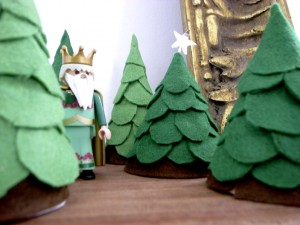
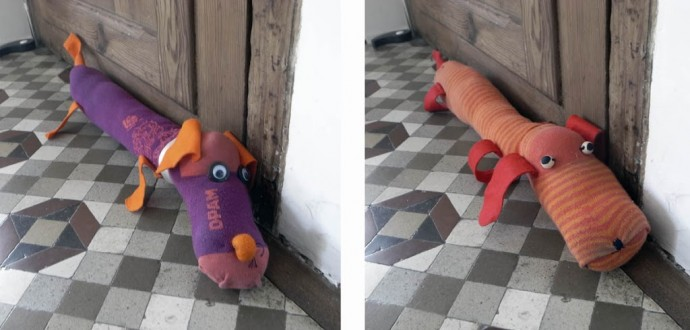
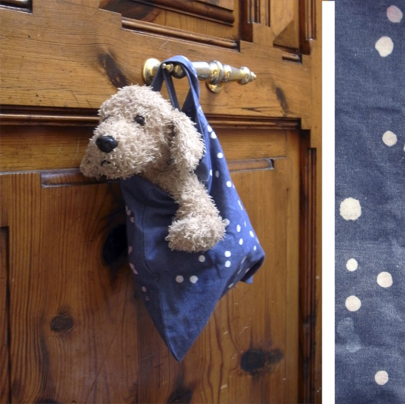

Little felt trees.
The structure consists of a carton cone. The brown felt is a strip and the green felt are circles glued on the cone from the bottom to the top.


The structure consists of a carton cone. The brown felt is a strip and the green felt are circles glued on the cone from the bottom to the top.

These pantyhose of my daughter. They only bust on one site so we gave them a new function. Dogs who are stopping the wind blowing under…
Read more →

It´s easy to lose your kid on a party with a lot s of people. On the other side of an bracelet of felt I wrote…
Read more →
Bag: Let the hot wax of a burning candle drop on a bag or a T-shirt and dye the textile afterwards.
Read more →
Tag bag: Roser gave me the idea… With this shapes of foam rubber you can make tags for bags writing the name on it without having…
Read more →